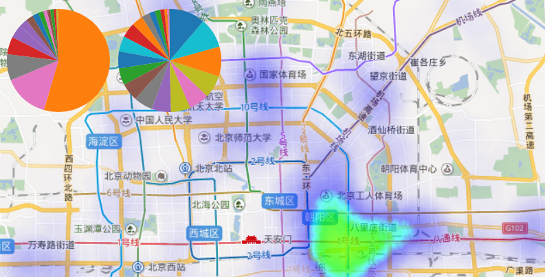
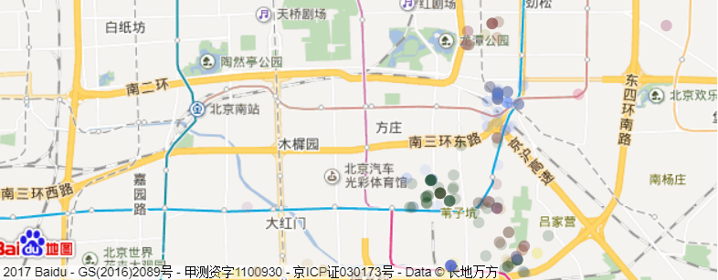

数据分析
数据集来自ChinaVis2017挑战赛第一题，数据时间跨度63天，覆盖北京市区内安装安全卫士的手机用户。
内容：在万种垃圾短信中，“代开发票”频率最高
空间分布：在北京16个区中，朝阳区是垃圾短信重灾区，其次有通州、丰台、海淀区。
场景1
警局领导查看北京市内各区垃圾短信猖獗程度，为警局进行针对某类事件立案提供决策建议。
领导可查看网站提供的“上帝视角”垃圾短信接收热力图，同时辅助的饼图可以直观的看到每个区垃圾短信数目占比。
场景2
某区某派出所警员计划抓捕相关嫌疑人行动，需要尽可能在正确的时间和地点展开抓捕。
警员首先框选想要查看的地区、选择想要查看的日期，后通过参考短信数目-时间柱状图点选时间轴，确定轨迹图播放时域。警员可以通过观察轨迹播放图，确定嫌疑人出没的时间地点。